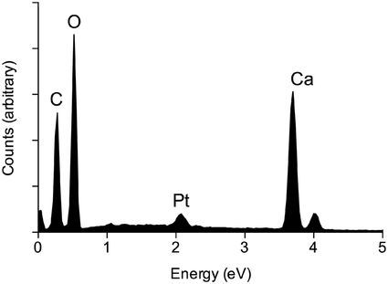

Thành phần định tính các nguyên tố

Image source: Topic 3 image sources
| Vietnamese | Thành phần định tính các nguyên tố |
|---|---|
| English | Qualitative elemental composition |
| Pronunciation | /ˈkwɑːlɪteɪtɪv ˌelɪˈmentl ˌkɑːmpəˈzɪʃən/ |
| Word type | Cụm danh từ (n.) |
Meaning (Vietnamese)
Thành phần định tính các nguyên tố
Meaning (English)
Information about which elements are present in a substance.
Example
Elemental analysis can help determine the qualitative elemental composition of a compound.
Phân tích nguyên tố có thể giúp xác định thành phần định tính các nguyên tố của hợp chất.
Another definition from the notes
Thông tin về các nguyên tố có mặt trong một chất
Information about which elements are present in a substance
Another example from the notes
Elemental analysis determines qualitative elemental composition.
Source of information: Topic 3 notes (see Sources)